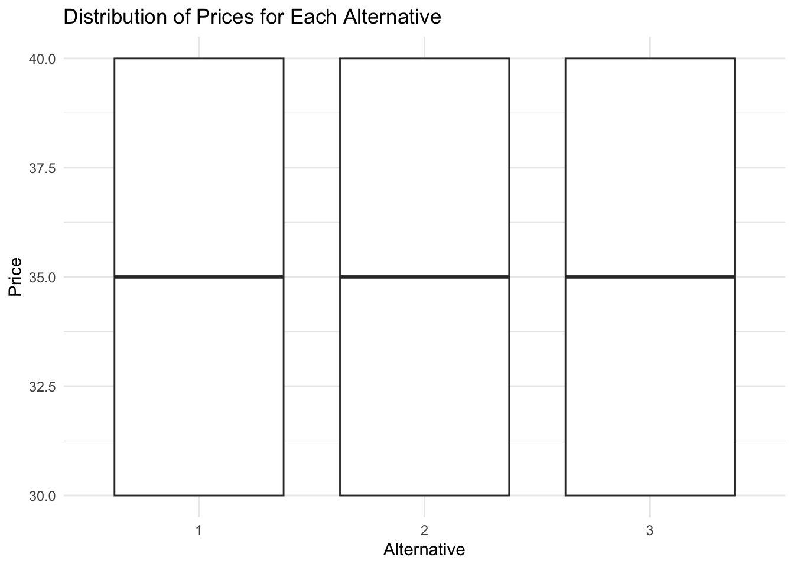
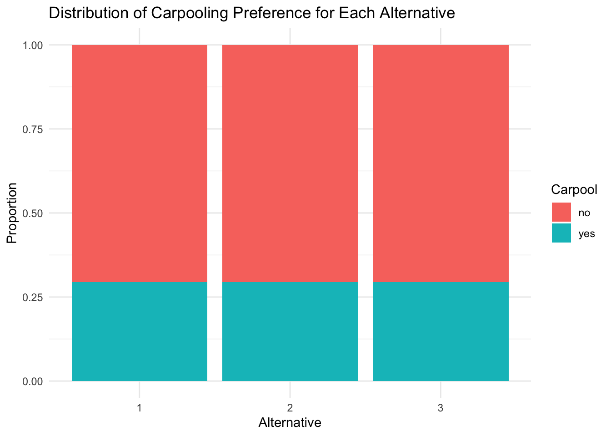
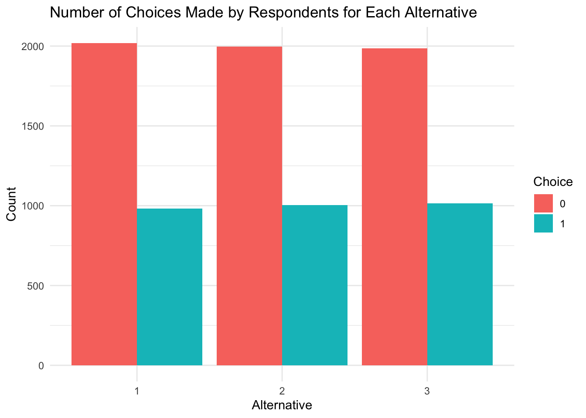

# A tibble: 6 × 13
id y1 y2 y3 y4 f1 f2 f3 f4 p1 p2 p3
<dbl> <dbl> <dbl> <dbl> <dbl> <dbl> <dbl> <dbl> <dbl> <dbl> <dbl> <dbl>
1 1 0 0 0 1 0 0 0 0 0.108 0.081 0.0610
2 2 0 1 0 0 0 0 0 0 0.108 0.0980 0.0640
3 3 0 1 0 0 0 0 0 0 0.108 0.0980 0.0610
4 4 0 1 0 0 0 0 0 0 0.108 0.0980 0.0610
5 5 0 1 0 0 0 0 0 0 0.125 0.0980 0.0490
6 6 0 1 0 0 0 0 0 0 0.108 0.092 0.0500
# ℹ 1 more variable: p4 <dbl>Multinomial Logit Examples
This assignment uses uses the MNL model to analyze (1) yogurt purchase data made by consumers at a retail location, and (2) conjoint data about consumer preferences for minivans.
1. Estimating Yogurt Preferences
Likelihood for the Multi-nomial Logit (MNL) Model
Suppose we have \(i=1,\ldots,n\) consumers who each select exactly one product \(j\) from a set of \(J\) products. The outcome variable is the identity of the product chosen \(y_i \in \{1, \ldots, J\}\) or equivalently a vector of \(J-1\) zeros and \(1\) one, where the \(1\) indicates the selected product. For example, if the third product was chosen out of 4 products, then either \(y=3\) or \(y=(0,0,1,0)\) depending on how we want to represent it. Suppose also that we have a vector of data on each product \(x_j\) (eg, size, price, etc.).
We model the consumer’s decision as the selection of the product that provides the most utility, and we’ll specify the utility function as a linear function of the product characteristics:
\[ U_{ij} = x_j'\beta + \epsilon_{ij} \]
where \(\epsilon_{ij}\) is an i.i.d. extreme value error term.
The choice of the i.i.d. extreme value error term leads to a closed-form expression for the probability that consumer \(i\) chooses product \(j\):
\[ \mathbb{P}_i(j) = \frac{e^{x_j'\beta}}{\sum_{k=1}^Je^{x_k'\beta}} \]
For example, if there are 4 products, the probability that consumer \(i\) chooses product 3 is:
\[ \mathbb{P}_i(3) = \frac{e^{x_3'\beta}}{e^{x_1'\beta} + e^{x_2'\beta} + e^{x_3'\beta} + e^{x_4'\beta}} \]
A clever way to write the individual likelihood function for consumer \(i\) is the product of the \(J\) probabilities, each raised to the power of an indicator variable (\(\delta_{ij}\)) that indicates the chosen product:
\[ L_i(\beta) = \prod_{j=1}^J \mathbb{P}_i(j)^{\delta_{ij}} = \mathbb{P}_i(1)^{\delta_{i1}} \times \ldots \times \mathbb{P}_i(J)^{\delta_{iJ}}\]
Notice that if the consumer selected product \(j=3\), then \(\delta_{i3}=1\) while \(\delta_{i1}=\delta_{i2}=\delta_{i4}=0\) and the likelihood is:
\[ L_i(\beta) = \mathbb{P}_i(1)^0 \times \mathbb{P}_i(2)^0 \times \mathbb{P}_i(3)^1 \times \mathbb{P}_i(4)^0 = \mathbb{P}_i(3) = \frac{e^{x_3'\beta}}{\sum_{k=1}^Je^{x_k'\beta}} \]
The joint likelihood (across all consumers) is the product of the \(n\) individual likelihoods:
\[ L_n(\beta) = \prod_{i=1}^n L_i(\beta) = \prod_{i=1}^n \prod_{j=1}^J \mathbb{P}_i(j)^{\delta_{ij}} \]
And the joint log-likelihood function is:
\[ \ell_n(\beta) = \sum_{i=1}^n \sum_{j=1}^J \delta_{ij} \log(\mathbb{P}_i(j)) \]
Yogurt Dataset
We will use the yogurt_data dataset, which provides anonymized consumer identifiers (id), a vector indicating the chosen product (y1:y4), a vector indicating if any products were “featured” in the store as a form of advertising (f1:f4), and the products’ prices (p1:p4). For example, consumer 1 purchased yogurt 4 at a price of 0.079/oz and none of the yogurts were featured/advertised at the time of consumer 1’s purchase. Consumers 2 through 7 each bought yogurt 2, etc.
Description of the yogurt data
This dataset contains the following variables:
-id: anonymized consumer identifiers -y: indicator variables showing which yogurt was purchased -f: indicator variables showing if a yogurt was featured in the store -p: continous variables indicating the prices of the yogurts
Each row in the dataset represents a unique purchase made by a consumer, and each set of columns (y1 to y4, f1 to f4, p1 to p4) pertains to the characteristics of the four yogurt products.
Let the vector of product features include brand dummy variables for yogurts 1-3 (we’ll omit a dummy for product 4 to avoid multi-collinearity), a dummy variable to indicate if a yogurt was featured, and a continuous variable for the yogurts’ prices:
\[ x_j' = [\mathbbm{1}(\text{Yogurt 1}), \mathbbm{1}(\text{Yogurt 2}), \mathbbm{1}(\text{Yogurt 3}), X_f, X_p] \]
The “hard part” of the MNL likelihood function is organizing the data, as we need to keep track of 3 dimensions (consumer \(i\), covariate \(k\), and product \(j\)) instead of the typical 2 dimensions for cross-sectional regression models (consumer \(i\) and covariate \(k\)).
What we would like to do is reorganize the data from a “wide” shape with \(n\) rows and multiple columns for each covariate, to a “long” shape with \(n \times J\) rows and a single column for each covariate. As part of this re-organization, we’ll add binary variables to indicate the first 3 products; the variables for featured and price are included in the dataset and simply need to be “pivoted” or “melted” from wide to long.
Estimation
| Parameter | Estimate |
|---|---|
| Intercept Yogurt 1 | 1.4119707 |
| Intercept Yogurt 2 | 0.6523545 |
| Intercept Yogurt 3 | -3.0846259 |
| Featured | 0.3268772 |
| Price | -37.5763842 |
Discussion
The estimated parameters for the intercepts of the three yogurts provide insight into consumer preferences for each yogurt type. These intercepts represent the baseline utility that consumers derive from each yogurt product before considering the effects of features such as being featured in the store or the price. The intercept values indicate the relative preference for each yogurt product. Higher intercepts suggest a higher baseline utility, which corresponds to a stronger inherent preference by consumers for that product, assuming other factors (like being featured or price) are constant. Yogurt 1, with an intercept of 1.4119707, has the highest baseline utility among the three products. This indicates that, all else being equal, consumers have the strongest inherent preference for Yogurt 1.
Yogurt 2, with an intercept of 0.6523545, also has a positive baseline utility, but it is lower than that of Yogurt 1. This suggests that consumers have a moderate preference for Yogurt 2. While it is preferred over Yogurt 3, it does not enjoy as strong a preference as Yogurt 1. In contrast, Yogurt 3 has an intercept of -3.0846259, which is a negative value. This indicates a significantly lower baseline utility compared to Yogurt 1 and Yogurt 2. Consequently, Yogurt 3 is the least preferred product among the three.
In general, the intercepts suggest that, in the absence of other factors, consumers have a strong preference for Yogurt 1, a moderate preference for Yogurt 2, and a significantly lower preference for Yogurt 3. This ranking provides valuable information for retailers and manufacturers, indicating that efforts to promote Yogurt 1 may capitalize on its existing strong preference, while strategies to improve the attractiveness of Yogurt 3 could be explored to enhance its competitive position in the market.
Dollar Benefit Calculation
The dollar benefit between the most-preferred yogurt (Yogurt 1) and the least-preferred yogurt (Yogurt 3) can be calculated using the utility difference and the dollar-per-util conversion factor.
Given the utility difference:
\[ \Delta U = \text{Intercept Yogurt 1} - \text{Intercept Yogurt 3} \]
and the dollar-per-util conversion factor:
\[ \text{Dollar-per-Util Conversion Factor} = \frac{1}{|\beta_{\text{price}}|} \]
The dollar benefit is calculated as:
\[ \text{Dollar Benefit} = \Delta U \times \text{Dollar-per-Util Conversion Factor} = ( \text{Intercept Yogurt 1} - \text{Intercept Yogurt 3} ) \times \frac{1}{|\beta_{\text{price}}|} \]
Substituting the values:
\[ \text{Dollar Benefit} = (1.4119707 - (-3.0846259)) \times \frac{1}{37.5763842} = 4.4965966 \times \frac{1}{37.5763842} \approx 0.11965 \]
The dollar benefit between the most-preferred yogurt (Yogurt 1) and the least-preferred yogurt (Yogurt 3) is approximately $0.12 per unit. This value represents the per-unit monetary measure of brand value, indicating how much more consumers value Yogurt 1 over Yogurt 3.
One benefit of the MNL model is that we can simulate counterfactuals (eg, what if the price of yogurt 1 was $0.10/oz instead of $0.08/oz).
| Product | Initial Market Share | New Market Share | Change |
|---|---|---|---|
| 1 | 0.6542172 | 0.0230716 | -0.6311455 |
| 2 | 0.4710059 | 0.7175646 | 0.2465587 |
| 3 | 0.0288812 | 0.0438084 | 0.0149273 |
| 4 | 0.2463129 | 0.3728599 | 0.1265470 |
When the price of Yogurt 1 is increased by $0.10, its market share drops dramatically from 65.4% to 2.3%. This indicates a strong price sensitivity among consumers for Yogurt 1. The significant decrease of approximately 63.1% in market share suggests that consumers are highly responsive to price changes for this product, and many switch to other yogurt options when the price of Yogurt 1 increases. Additionally, the market shares for the other yogurts increase as a result of this price change. This redistribution of market shares indicates that when the price of Yogurt 1 rises, consumers shift their preferences to the other available yogurts, with the largest portion shifting to Yogurt 2 and a smaller but notable shift to Yogurt 4. Therefore, the results clearly show that increasing the price of Yogurt 1 by $0.10 leads to a substantial decrease in its market share, highlighting the high price elasticity of demand for this yogurt. Consumers readily switch to alternative products when faced with a price increase for Yogurt 1.
2. Estimating Minivan Preferences
Data
This is how the dataset looks like:
resp.id ques alt carpool seat cargo eng price choice
1 1 1 1 yes 6 2ft gas 35 0
2 1 1 2 yes 8 3ft hyb 30 0
3 1 1 3 yes 6 3ft gas 30 1
4 1 2 1 yes 6 2ft gas 30 0
5 1 2 2 yes 7 3ft gas 35 1
6 1 2 3 yes 6 2ft elec 35 0Based on the information collected, we know that:
Number of respondents: 200 Number of choice tasks per respondent: 0.075 Number of alternatives per choice task: 3 


The attributes (levels) were number of seats (6,7,8), cargo space (2ft, 3ft), engine type (gas, hybrid, electric), and price (in thousands of dollars).
Model
| Variable | Coefficient | Std. Error |
|---|---|---|
| Intercept | 5.532174 | 0.224186 |
| C(seat, Treatment(reference=“6”))[T.7] | -0.524752 | 0.059634 |
| C(seat, Treatment(reference=“6”))[T.8] | -0.293085 | 0.058510 |
| C(cargo, Treatment(reference=“2ft”))[T.3ft] | 0.438538 | 0.048706 |
| C(eng, Treatment(reference=“gas”))[T.elec] | -1.434680 | 0.061794 |
| C(eng, Treatment(reference=“gas”))[T.hyb] | -0.760489 | 0.056919 |
| price | -0.159133 | 0.006212 |
Results
The intercept in the multinomial logistic regression model has a coefficient of 5.532174 with a standard error of 0.224186. This value represents the baseline log-odds of choosing a car with the reference features (6 seats, 2ft cargo space, and a gas engine) when the price is hypothetically zero. It serves as the starting point against which other features are compared.
For the number of seats, the model shows that cars with 7 or 8 seats are less preferred compared to those with 6 seats. Specifically, the coefficient for cars with 7 seats is -0.524752 with a standard error of 0.059634, indicating a significant decrease in preference. Similarly, the coefficient for cars with 8 seats is -0.293085 with a standard error of 0.058510. Although cars with 8 seats are also less preferred than those with 6 seats, they are slightly more favored than cars with 7 seats.Regarding cargo space, the model reveals that cars with 3ft of cargo space are more preferred than those with 2ft. The positive coefficient of 0.438538 (standard error of 0.048706) for 3ft cargo space indicates a higher likelihood of choosing cars with larger cargo space compared to the reference level.
The engine type significantly influences preferences as well. Cars with gas engines are the most preferred. The coefficient for electric engines is -1.434680 with a standard error of 0.061794, showing a strong negative impact on preference. This suggests that electric engines are much less favored compared to gas engines. Hybrid engines also have a negative coefficient of -0.760489 (standard error of 0.056919), indicating they are less preferred than gas engines, but more so than electric engines. The price coefficient is -0.159133 with a standard error of 0.006212. This negative coefficient signifies that as the price of a car increases, the likelihood of it being chosen decreases. This finding aligns with common expectations that higher prices generally reduce consumer demand.
In general, the data shows that the most preferred car features are 6 seats, 3ft cargo space, and a gas engine. Conversely, increasing the number of seats to 7 or 8 reduces preference, with 7 seats being the least favored. Additionally, cars with electric engines are the least preferred, followed by hybrid engines, with gas engines being the most preferred. Lower prices also significantly enhance the likelihood of a car being chosen. This analysis provides valuable insights into customer preferences, which can guide product design and marketing strategies to better align with consumer demand.
The dollar value of having 3ft of cargo space compared to 2ft of cargo space is approximately $2.76. This means that customers are willing to pay about $2.76 more for a car with 3ft of cargo space compared to one with 2ft of cargo space. This result comes from the fact that the coefficient for 3ft space is 0.438538 and the price coefficient is -0.159133. Then, we know that the dollar-per-util is 1/|0.159133|, which will be 6.285 approximately. Finally, we just need to multiply the coefficient for 3ft space times the dollar-per-util, that will give us 2.76.
| Minivan | Seats | Cargo | Engine | Price |
|---|---|---|---|---|
| A | 7 | 2 | Hyb | 30 |
| B | 6 | 2 | Gas | 30 |
| C | 8 | 2 | Gas | 30 |
| D | 7 | 3 | Gas | 40 |
| E | 6 | 2 | Elec | 40 |
| F | 7 | 2 | Hyb | 35 |